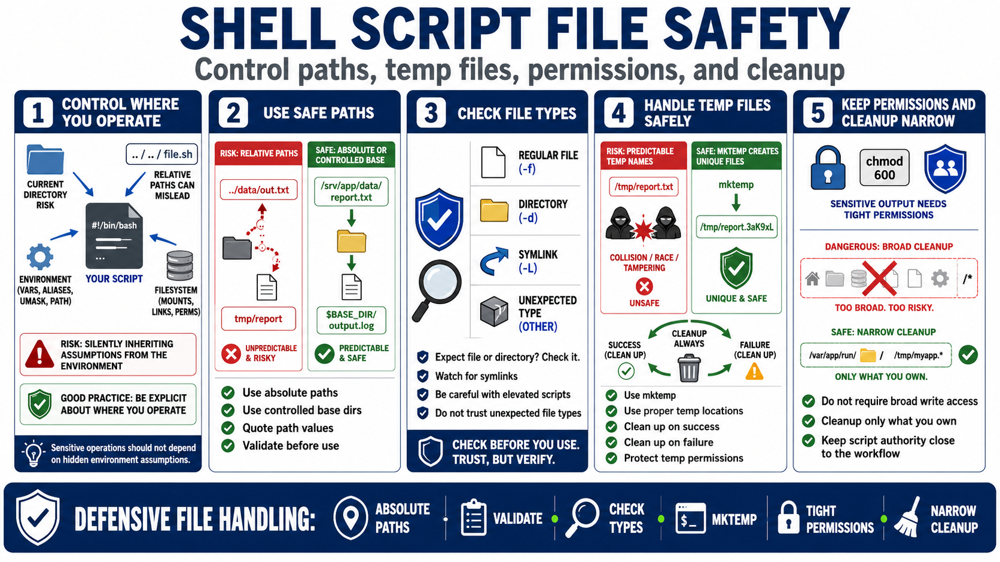

Files, Paths, Temporary Data, and Permissions
Connecting to LMS... Progress: in progress

Narration
Many shell scripts read, write, move, delete, and transform files. Risk appears when scripts assume a trusted current directory, rely on relative paths, create predictable temporary files, overwrite existing data, or ignore permissions. Defensive scripts control where they operate rather than inheriting important assumptions silently from the environment.
Use absolute paths or controlled base directories when the operation is sensitive. Quote path values and validate them before use. Check that an expected target is a regular file or directory when that distinction matters. Be aware of symlinks and unexpected file types, especially when a script runs with elevated permissions or writes output that another process will trust.
Temporary data should be handled with safe patterns. Tools such as mktemp can create unpredictable temporary names. Temporary files should be stored in appropriate locations, cleaned up after success or failure, and protected with suitable permissions. Predictable temporary filenames and broad writable locations can create collisions, exposure, or unsafe file operations.
Permissions are part of the script design. Sensitive output should not be written with broad permissions. The script should not require broad write access to unrelated directories. Cleanup should be narrow enough that it cannot remove the wrong data. Safe filesystem behavior keeps the script's authority close to the workflow it actually owns.